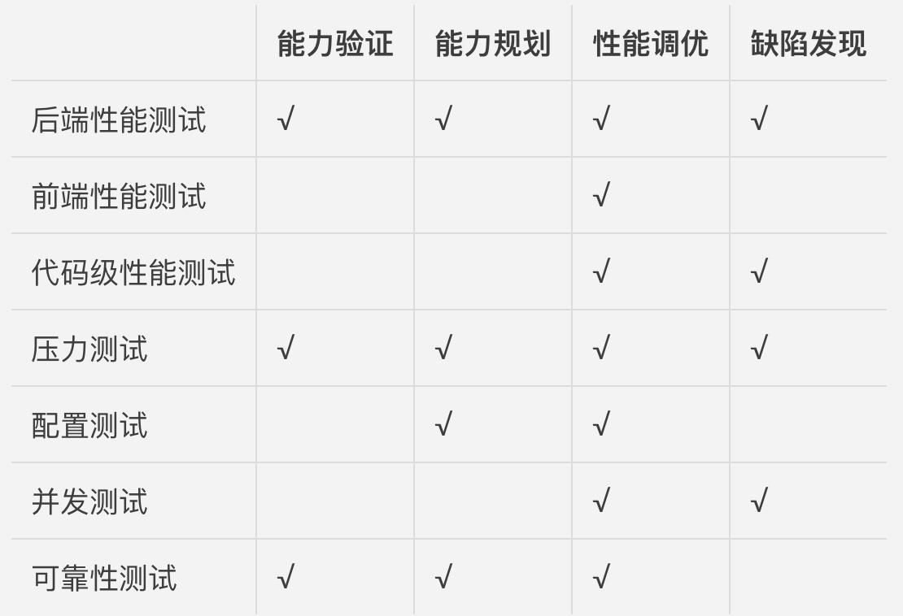

- 00 开篇词 从“小工”到“专家”，我的软件测试修炼之道.md
- 01 你真的懂测试吗？从“用户登录”测试谈起.md
- 02 如何设计一个“好的”测试用例？.md
- 03 什么是单元测试？如何做好单元测试？.md
- 04 为什么要做自动化测试？什么样的项目适合做自动化测试？.md
- 05 你知道软件开发各阶段都有哪些自动化测试技术吗？.md
- 06 你真的懂测试覆盖率吗？.md
- 07 如何高效填写软件缺陷报告？.md
- 08 以终为始，如何才能做好测试计划？.md
- 09 软件测试工程师的核心竞争力是什么？.md
- 10 软件测试工程师需要掌握的非测试知识有哪些？.md
- 11 互联网产品的测试策略应该如何设计？.md
- 12 从0到1：你的第一个GUI自动化测试.md
- 13 效率为王：脚本与数据的解耦 + Page Object模型.md
- 14 更接近业务的抽象：让自动化测试脚本更好地描述业务.md
- 15 过不了的坎：聊聊GUI自动化过程中的测试数据.md
- 16 脑洞大开：GUI测试还能这么玩（Page Code Gen + Data Gen + Headless）？.md
- 17 精益求精：聊聊提高GUI测试稳定性的关键技术.md
- 18 眼前一亮：带你玩转GUI自动化的测试报告.md
- 19 真实的战场：如何在大型项目中设计GUI自动化测试策略.md
- 20 与时俱进：浅谈移动应用测试方法与思路.md
- 21 移动测试神器：带你玩转Appium.md
- 22 从0到1：API测试怎么做？常用API测试工具简介.md
- 23 知其然知其所以然：聊聊API自动化测试框架的前世今生.md
- 24 紧跟时代步伐：微服务模式下API测试要怎么做？.md
- 25 不破不立：掌握代码级测试的基本理念与方法.md
- 26 深入浅出之静态测试方法.md
- 27 深入浅出之动态测试方法.md
- 28 带你一起解读不同视角的软件性能与性能指标.md
- 29 聊聊性能测试的基本方法与应用领域.md
- 30 工欲善其事必先利其器：后端性能测试工具原理与行业常用工具简介.md
- 31 工欲善其事必先利其器：前端性能测试工具原理与行业常用工具简介.md
- 32 无实例无真相：基于LoadRunner实现企业级服务器端性能测试的实践（上）.md
- 33 无实例无真相：基于LoadRunner实现企业级服务器端性能测试的实践（下）.md
- 34 站在巨人的肩膀：企业级实际性能测试案例与经验分享.md
- 35 如何准备测试数据？.md
- 36 浅谈测试数据的痛点.md
- 37 测试数据的“银弹”- 统一测试数据平台（上）.md
- 38 测试数据的“银弹”- 统一测试数据平台（下）.md
- 39 从小作坊到工厂：什么是Selenium Grid？如何搭建Selenium Grid？.md
- 40 从小工到专家：聊聊测试执行环境的架构设计（上）.md
- 41 从小工到专家：聊聊测试执行环境的架构设计（下）.md
- 42 实战：大型全球化电商的测试基础架构设计.md
- 43 发挥人的潜能：探索式测试.md
- 44 测试先行：测试驱动开发(TDD).md
- 45 打蛇打七寸：精准测试.md
- 46 安全第一：渗透测试.md
- 47 用机器设计测试用例：基于模型的测试.md
- 48 优秀的测试工程师为什么要懂大型网站的架构设计？.md
- 49 深入浅出网站高性能架构设计.md
- 50 深入浅出网站高可用架构设计.md
- 51 深入浅出网站伸缩性架构设计.md
- 52 深入浅出网站可扩展性架构设计.md
- 测试专栏特别放送 浅谈全链路压测.md
- 测试专栏特别放送 答疑解惑第一期.md
- 测试专栏特别放送 答疑解惑第七期.md
- 测试专栏特别放送 答疑解惑第三期.md
- 测试专栏特别放送 答疑解惑第二期.md
- 测试专栏特别放送 答疑解惑第五期.md
- 测试专栏特别放送 答疑解惑第六期.md
- 测试专栏特别放送 答疑解惑第四期.md
- 结束语 不是结束，而是开始.md
29 聊聊性能测试的基本方法与应用领域
你好，我是茹炳晟。今天我和你分享的主题是：聊聊性能测试的基本方法与应用领域。
在上一次分享《带你一起解读不同视角的软件性能与性能指标》这个主题时，我介绍了衡量软件性能的三个最主要的指标：并发用户数、响应时间和系统吞吐量，和你分享了这个指标的内涵和外延。
所以，今天我会先继续上次的话题，和你分享并发用户数、响应时间和系统吞吐量这三个指标之间的关系和约束；然后，我会再和你分享性能测试七种常用方法，以及四大应用领域。
由于性能测试是一个很宽泛的话题，所以不同的人对性能测试的看法也不完全一样，同样一种方法可能也会有不同的表述方式。但是，从我亲身经历的实践来看，我们最关键的还是要去理解这些方法的本质和内涵，这样在面对实际问题时才能处变不惊，灵活应对。
虽然关于概念、方法和原理的内容会有些枯燥，但是掌握了这些看似枯燥的内容后，你会发现自己的性能测试知识体系越发完善了。当然，在这些看似枯燥的理论讲解中，我也会通过类比的方式，帮助你理解。如果你觉得不过瘾，还想知道一些更细节的实现，欢迎你给我留言，我们一起来讨论。
并发用户数、响应时间、系统吞吐量之间的关系
并发用户数、响应时间、系统吞吐量，这三个名词的含义可能就已经让你感觉云里雾里了，因此我会通过一个我们日常生活中的体检为例，再来解释一下它们到底是什么，以及它们之间的关系和约束。
你先来想象这样一个场景：假设你找了一份新工作，入职前需要到体检中心完成入职体检。
在体检中心做检查的过程，通常是先到前台登记个人信息并领取体检单，然后根据体检单的检查项目依次完成不同科室的检查。
假设一共有5个科室，每个科室有3个候诊室，你发现体检中心有很多人都在做检查，那么你一般会选择先做排队人数较少的检查项目，直至完成5个科室的全部检查，最后离开体检中心。
现在，我们做个类比：把整个体检中心想象成一个软件系统，从你进入体检中心到完成全部检查离开所花费的时间就是响应时间，而同时在体检中心参加体检的总人数就是并发用户数，那么系统吞吐量就可以想象成是单位时间内完成体检的人数，比如每小时100人。
如果你到达体检中心的时间比较早，这时人还很少，5个科室都不用排队，那么你就能以最短的时间完成体检。
也就是说，当系统的并发用户数比较少时，响应时间就比较短；但是由于整体的并发用户数少，所以系统的吞吐量也很低。从中，我们可以得出这样的结论：
当系统并发用户数较少时，系统的吞吐量也低，系统处于空闲状态，我们往往把这个阶段称为 “空闲区间”。
如果你到达体检中心时，这里的人已经比较多了，只有部分科室不需要排队，但好在每个科室都有3个候诊室同时进行检查，所以排队时间不会很长，你还是可以在较短的时间完成体检。
也就是说，当系统的并发用户数比较多时，响应时间不会增加太多，因此系统的整体吞吐量也随着并发用户数的变大而变大的。从中，我们可以得出这样的结论：
当系统整体负载并不是很大时，随着系统并发用户数的增长，系统的吞吐量也会随之呈线性增长，我们往往把这个阶段称为 “线性增长区间”。
但是，当体检中心的人越来越多时，每个科室都需要排队，而且每个科室的队伍都很长，你每检查完一个项目都要花很长时间去排队进行下一个检查项目。这样一来，你完成体检的时间就会明显变长。
也就是说，系统的并发用户数达到一定规模时，每个用户的响应时间都会明显变长，所以系统的整体吞吐量并不会继续随着并发用户数的增长而增长。从中，我们可以得出这样的结论：
随着系统并发用户数的进一步增长，系统的处理能力逐渐趋于饱和，因此每个用户的响应时间会逐渐变长。相应地，系统的整体吞吐量并不会随着并发用户数的增长而继续呈线性增长。我们往往把这个阶段称为系统的“拐点”。
最糟糕的情况来了，如果体检中心的人继续增加，你会发现连排队、站人的地方都没有了，所有人都被堵在了一起，候诊室中检查完的人出不来，排队的人又进不去。
也就是说，系统的并发用户数已经突破极限，每个用户的响应时间变得无限长，因此系统的整体吞吐量变成了零。换言之，此时的系统已经被压垮了。从中，我们可以得出这样的结论：
随着系统并发用户数的增长，系统处理能力达到过饱和状态。此时，如果继续增加并发用户数，最终所有用户的响应时间会变得无限长。相应地，系统的整体吞吐量会降为零，系统处于被压垮的状态。我们往往把这个阶段称为“过饱和区间”。
通过这个类比，相信你已经对并发用户数、响应时间和系统吞吐量理解得更透彻了，对于它们之间的关系和约束，也都了然于胸了。
只有理解了这些主要性能指标之间的约束关系，我们才能在实际的性能测试实践中设计有的放矢的性能测试场景。比如，后端性能测试的测试负载，我们一般只会把它设计在“线性增长区间”内；而压力测试的测试负载，我们则会将它设计在系统“拐点”上下，甚至是“过饱和区间”。
那么，接下来让我们一起来看一下性能测试的方法都有哪些。
常用的七种性能测试方法
根据在实际项目中的实践经验，我把常用的性能测试方法分为七大类：后端性能测试（Back-end Performance Test）、前端性能测试（Front-end Performance Test）、代码级性能测试（Code-level Performance Test）、压力测试（Load/Stress Test）、配置测试（Configuration Test）、并发测试（Concurrence Test），以及可靠性测试（Reliability Test）。接下来，我将详细为你介绍每一种测试方法。
第一，后端性能测试
其实，你平时听到的性能测试，大多数情况下指的是后端性能测试，也就是服务器端性能测试。
后端性能测试，是通过性能测试工具模拟大量的并发用户请求，然后获取系统性能的各项指标，并且验证各项指标是否符合预期的性能需求的测试手段。
这里的性能指标，除了包括并发用户数、响应时间和系统吞吐量外，还应该包括各类资源的使用率，比如系统级别的CPU占用率、内存使用率、磁盘I/O和网络I/O等，再比如应用级别以及JVM级别的各类资源使用率指标等。
由于需要模拟的并发用户数，通常在“几百”到“几百万”的数量级，所以你选择的性能测试工具，一定不是基于GUI的，而是要采用基于协议的模拟方式，也就是去模拟用户在GUI操作的过程中实际向后端服务发起的请求。
只有这样才能模拟很高的并发用户数，尽可能地模拟出真实的使用场景，这也是现在所有后端性能测试工具所采用的方法。
根据应用领域的不同，后端性能测试的场景设计主要包括以下两种方式：
- 基于性能需求目标的测试验证；
- 探索系统的容量，并验证系统容量的可扩展性
第二，前端性能测试
前端性能测试并没有一个严格的定义和标准。
通常来讲，前端性能关注的是浏览器端的页面渲染时间、资源加载顺序、请求数量、前端缓存使用情况、资源压缩等内容，希望借此找到页面加载过程中比较耗时的操作和资源，然后进行有针对性的优化，最终达到优化终端用户在浏览器端使用体验的目的。
目前，业界普遍采用的前端测试方法，是雅虎（Yahoo）前端团队总结的7大类35条前端优化规则，你可以通过雅虎网站查看这些规则，以及对各规则的详细解读。
我在这里列出了其中几个最典型也是最重要的规则，来帮助你理解前端性能测试优化的关注范围。
- 减少http请求次数：http请求数量越多，执行过程耗时就越长，所以可以采用合并多个图片到一个图片文件的方法来减少http请求次数，也可以采用将多个脚本文件合并成单一文件的方式减少http请求次数；
- 减少DNS查询次数：DNS的作用是将URL转化为实际服务器主机IP地址，实现原理是分级查找，查找过程需要花费20~100ms的时间，所以一方面我们要加快单次查找的时间，另一方面也要减少一个页面中资源使用了多个不同域的情况；
- 避免页面跳转：页面跳转相当于又打开一个新的页面，耗费的时间就会比较长，所以要尽量避免使用页面跳转；
- 使用内容分发网络（CDN）：使用CDN相当于对静态内容做了缓存，并把缓存内容放在网络供应商（ISP）的机房，用户根据就近原则到ISP机房获取这些被缓存了的静态资源，因此可以大幅提高性能；
- Gzip压缩传输文件：压缩可以帮助减小传输文件的大小，进而可以从网络传输时间的层面来减少响应时间；
第三，代码级性能测试
代码级性能测试，是指在单元测试阶段就对代码的时间性能和空间性能进行必要的测试和评估，以防止底层代码的效率问题在项目后期才被发现的尴尬。
如果你从事过性能测试相关的工作，一定遇到过这样的场景：系统级别的性能测试发现一个操作的响应时间很长，然后你要花费很多时间去逐级排查，最后却发现罪魁祸首是代码中某个实现低效的底层算法。这种自上而下的逐级排查定位的方法，效率通常都很低，代价也很高。
所以，我们就需要在项目早期，对一些关键算法进行代码级别的性能测试，以防止此类在代码层面就可以被发现的性能问题，遗留到最后的系统性能测试阶段才被发现。
但是，从实际执行的层面来讲，代码级性能测试并不存在严格意义上的测试工具，通常的做法是：改造现有的单元测试框架。
最常使用的改造方法是：
将原本只会执行一次的单元测试用例连续执行n次，这个n的取值范围通常是2000~5000；
统计执行n次的平均时间。如果这个平均时间比较长（也就是单次函数调用时间比较长）的话，比如已经达到了秒级，那么通常情况下这个被测函数的实现逻辑一定需要优化。
这里之所以采用执行n次的方式，是因为函数执行时间往往是毫秒级的，单次执行的误差会比较大，所以采用多次执行取平均值的做法。
第四，压力测试
压力测试，通常指的是后端压力测试，一般采用后端性能测试的方法，不断对系统施加压力，并验证系统化处于或长期处于临界饱和阶段的稳定性以及性能指标，并试图找到系统处于临界状态时的主要瓶颈点。所以，压力测试往往被用于系统容量规划的测试。
还有些情况，在执行压力测试时，我们还会故意在临界饱和状态的基础上继续施加压力，直至系统完全瘫痪，观察这个期间系统的行为；然后，逐渐减小压力，观察瘫痪的系统是否可以自愈。
第五，配置测试
配置测试，主要用于观察系统在不同配置下的性能表现，通常使用后端性能测试的方法：
通过性能基准测试（Performance Benchmark）建立性能基线（Performance Baseline）；
在此基础上，调整配置；
基于同样的性能基准测试，观察不同配置条件下系统性能的差异，根本目的是要找到特定压力模式下的最佳配置。
这里需要注意的是，“配置”是一个广义配置的概念，包含了以下多个层面的配置：
- 宿主操作系统的配置；
- 应用服务器的配置；
- 数据库的配置；
- JVM的配置；
- 网络环境的配置；
- …
第六，并发测试
并发测试，指的是在同一时间，同时调用后端服务，期间观察被调用服务在并发情况下的行为表现，旨在发现诸如资源竞争、资源死锁之类的问题。
谈到并发测试，我就不得不和你说说“集合点并发”的概念了，它源于HP的LoadRunner，目前已经被广泛使用了。那，到底什么是“集合点并发”呢？
假设我们希望后端调用的并发数是100，如果直接设定100个并发用户是无法达到这个目标的，因为这100个并发用户会各自执行各自的操作，你无法控制某一个确定的时间点上后端服务的并发数量。
为了达到准确控制后端服务并发数的目的，我们需要让某些并发用户到达该集合点时，先处于等待状态，直到参与该集合的全部并发用户都到达时，再一起向后端服务发起请求。简单地说，就是先到的并发用户要等着，等所有并发用户都到了以后，再集中向后端服务发起请求。
比如，当要求的集合点并发数是100时，那么前99个到达的用户都会等在那里，直到第100个用户到了，才集中向后端服务发起请求。当然，实际达到服务器的并发请求数，还会因为网络延迟等原因小于100。
所以，在实际项目中，我建议在要求的并发数上进行适当放大，比如要求的并发数是100，那我们集合点并发数可以设置为120。
第七，可靠性测试
可靠性测试，是验证系统在常规负载模式下长期运行的稳定性。
虽然可靠性测试在不同公司的叫法不同，但其本质就是通过长时间模拟真实的系统负载来发现系统潜在的内存泄漏、链接池回收等问题。
由于真实环境下的实际负载，会有高峰和低谷的交替变化（比如，对于企业级应用，白天通常是高峰时段，而晚上则是低峰时段），所以为了尽可能地模拟出真实的负载情况，我们会每12小时模拟一个高峰负载，两个高峰负载中间会模拟一个低峰负载，依次循环3-7天，形成一个类似于“波浪形”的系统测试负载曲线。
然后，用这个“波浪形”的测试负载模拟真实的系统负载，完成可靠性测试。同样地，可靠性测试也会持续3-7天。
聊完了常用性能测试方法的种类后，我们再来简单看一下性能测试的四大应用领域，以及每个应用领域都会使用哪些性能测试方法。
性能测试的四大应用领域
不同的性能测试方法适用于不同的应用领域去解决不同的问题，这里“不同的应用领域”主要包括能力验证、能力规划、性能调优、缺陷发现这四大方面。每个应用领域可以根据自身特点，选择合适的测试方法。
第一，能力验证
能力验证是最常用，也是最容易理解的性能测试的应用领域，主要是验证“某系统能否在A条件下具有B能力”，通常要求在明确的软硬件环境下，根据明确的系统性能需求设计测试方案和用例。
能力验证这个领域最常使用的测试方法，包括后端性能测试、压力测试和可靠性测试。
第二，能力规划
能力规划关注的是，如何才能使系统达到要求的性能和容量。通常情况下，我们会采用探索性测试的方式来了解系统的能力。
能力规划解决的问题，主要包括以下几个方面：
- 能否支持未来一段时间内的用户增长；
- 应该如何调整系统配置，使系统能够满足不断增长的用户数需求；
- 应用集群的可扩展性验证，以及寻找集群扩展的瓶颈点；
- 数据库集群的可扩展性验证；
- 缓存集群的可扩展性验证；
- …
能力规划最常使用的测试方法，主要有后端性能测试、压力测试、配置测试和可靠性测试。
第三，性能调优
性能调优，其实是性能测试的延伸。在一些大型软件公司，会有专门的性能工程（Performance Engineering）团队，除了负责性能测试的工作外，还会负责性能调优。
性能调优主要解决性能测试过程中发现的性能瓶颈的问题，通常会涉及多个层面的调整，包括硬件设备选型、操作系统配置、应用系统配置、数据库配置和应用代码实现的优化等等。
这个领域最常用的测试方法，涵盖了我在上面分享的七大类测试方法，即后端性能测试、前端性能测试、代码级性能测试、压力测试、配置测试、并发测试和可靠性测试。
第四，缺陷发现
缺陷发现，是一个比较直接的应用领域，通过性能测试的各种方法来发现诸如内存泄露、资源竞争、不合理的线程锁和死锁等问题。
缺陷发现，最常用的测试方法主要有并发测试、压力测试、后端性能测试和代码级性能测试。
上面这些内容就是性能测试的常用方法和应用领域了，我用一张表汇总了各个应用领域需要用到的测试方法，希望可以帮助你记忆、理解。

总结
今天我通过一个生活中“体检”的实例，和你分享了并发用户数、响应时间和系统吞吐量三者之间的关系：
- 当系统整体负载并不是很大时，随着并发用户数的增长，系统的吞吐量也会随之线性增长；
- 随着并发用户数的进一步增长，系统处理能力逐渐趋于饱和，因此每个用户的响应时间会逐渐变长，相应地，系统的整体吞吐量并不会随着并发用户数的增长而继续线性增长。
- 如果并发用户数再继续增长，系统处理能力达到过饱和状态，此时所有用户的响应时间会变得无限长，相应地，系统的整体吞吐量会降为零，系统处于被压垮的状态。
然后，我跟你分享了后端性能测试、前端性能测试、代码级性能测试、压力测试、配置测试、并发测试，以及可靠性测试这七种常用的性能测试方法，并探讨了这七种方法在能力验证、能力规划、性能调优和缺陷发现这四种场景下的使用情况。
希望我今天的分享，可以帮你打好性能测试知识体系的基础，解决你在实际项目中遇到的问题。
思考题
我今天提到的性能测试的七种测试方法，以及四大应用领域，你在实际的工程项目中接触过哪些呢？在使用过程中，你有没有遇到过什么问题，又是如何解决的？
感谢你的收听，欢迎给我留言。
© 2019 - 2023 Liangliang Lee. Powered by gin and hexo-theme-book.